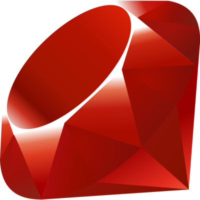

Back-End

En informatique, un back-end (parfois aussi appelé un arrière-plan) est un terme désignant un étage de sortie d'un logiciel devant produire un résultat. On l'oppose au front-end (aussi appelé un frontal) qui lui est la partie visible de l'iceberg.
PHP

PHP: Hypertext Preprocessor, plus connu sous son sigle PHP (sigle auto-référentiel), est un "langage de programmation" libre, principalement utilisé pour produire des pages Web dynamiques via un serveur HTTP, mais pouvant également fonctionner comme n'importe quel langage interprété de façon locale. PHP est un langage impératif orienté objet. PHP a permis de créer un grand nombre de sites web célèbres, comme Facebook et Wikipédia Il est considéré comme une des bases de la création de sites web dits dynamiques mais également des applications web.
Java

Java est une technique informatique développée initialement par Sun Microsystems puis acquise par Oracle suite au rachat de l'entreprise. Défini à l'origine comme un langage de programmation, Java a évolué pour devenir un ensemble cohérent d'éléments techniques et non techniques. Ainsi, la technologie Java regroupe : *Des standards (la plate-forme Java) définis sous forme de spécification par le Java Community Process (JCP), en trois éditions : *Java SE (standard edition), *Java EE (enterprise edition), s'appuyant sur Java SE, *Java ME (micro edition), indépendante des deux précédentes ; *Des logiciels (langages informatiques, bibliothèques, frameworks, serveurs d'application, outils d'aide au développement), dont : *Des implémentations (concurrentes) de ces spécifications, *Un écosystème d'autres logiciels s'appuyant sur tout ou partie de ces standards, voire leur faisant concurrence ; *Des communautés d'entreprises, organisations à but non lucratif (fondations, Java User Groups, universités) et indépendants, membres ou non du JCP, possédant tout ou partie des marques, brevets, parts de marché liés à la technologie Java. Java est un des termes les plus connus du monde de l'informatique et de l'Internet. Sa notoriété est telle que Sun, avant d'être acheté par Oracle Corporation, a décidé de l'utiliser pour son symbole boursier au Nasdaq, symbole qui était SUNW à l'origine, et est devenu JAVA1. Java est utilisé dans une grande variété de plates-formes depuis les systèmes embarqués et les téléphones mobiles, les ordinateurs individuels, les serveurs, les applications d’entreprise, les superordinateurs, etc.
Python

Python (prononcé en anglais /ˈpaɪ.θɑn/) est un langage de programmation interprété, multi-paradigme et multiplateformes. Il favorise la programmation impérative structurée, fonctionnelle et orientée objet. Il est doté d'un typage dynamique fort, d'une gestion automatique de la mémoire par ramasse-miettes et d'un système de gestion d'exceptions ; il est ainsi similaire à Perl, Ruby, Scheme, Smalltalk et Tcl. Le langage Python est placé sous une licence libre proche de la licence BSD et fonctionne sur la plupart des plates-formes informatiques, des smartphones aux ordinateurs centraux, de Windows à Unix avec notamment GNU/Linux en passant par macOS, ou encore Android, iOS, et peut aussi être traduit en Java ou .NET. Il est conçu pour optimiser la productivité des programmeurs en offrant des outils de haut niveau et une syntaxe simple à utiliser. Il est également apprécié par certains pédagogues qui y trouvent un langage où la syntaxe, clairement séparée des mécanismes de bas niveau, permet une initiation aisée aux concepts de base de la programmation.
Ruby
Ruby est un langage de programmation libre. Il est interprété, orienté objet et multi-paradigme. Le langage a été standardisé au Japon en 2011 (JIS X 3017:2011), et en 2012 par l'Organisation internationale de normalisation (ISO 30170:2012).